Publications
My complete list of publications with written contributions is listed below. Click on the title to download a PDF of the publication. ADS Library of Matthew Kenworthy's publications.
Periodic brightening of Kepler light curves: investigating the possibility of forward scattering due to dust clouds
van Kooten, M. A. M., Kenworthy, M., & Doelman, N. (2020)
MNRAS, 499, 2817 [ADS]
Unveiling the β Pictoris system, coupling high contrast imaging, interferometric, and radial velocity data
Lagrange, A. M., Rubini, P., Nowak, M., et al. (2020)
A&A, 642, A18 [ADS]
Disk Evolution Study Through Imaging of Nearby Young Stars (DESTINYS): A close low-mass companion to ET Cha
Ginski, C., Ménard, F., Rab, C., et al. (2020)
A&A, 642, A119 [ADS]
METIS high-contrast imaging: design and expected performance
Carlomagno, B., Delacroix, C., Absil, O., et al. (2020)
JATIS, 6, 035005 [ADS]
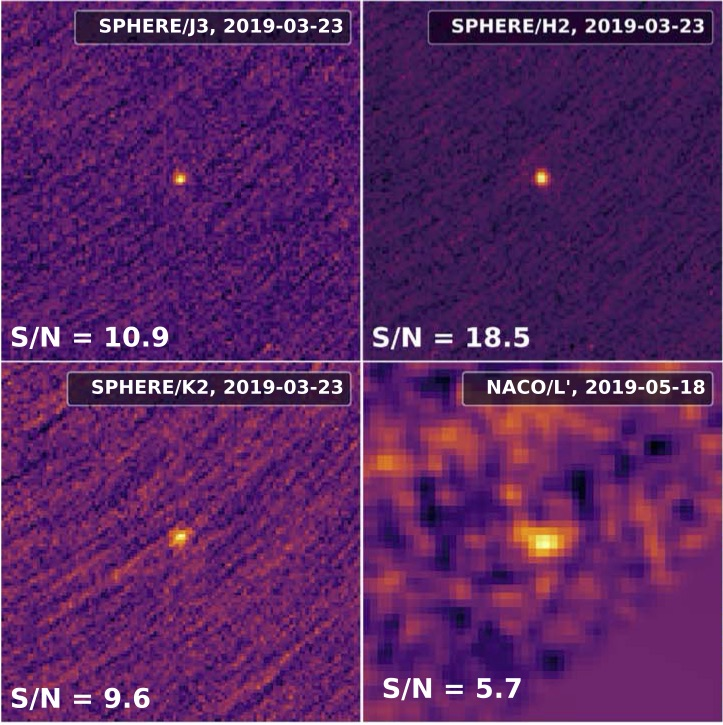A second planetary mass companion to TYC 8998, with a mass of 6 Jupiters, making it the third directly imaged multiple exoplanet system. Bohn et al. (2020) ApJ, 898, 16.
Two Directly Imaged, Wide-orbit Giant Planets around the Young, Solar Analog TYC 8998-760-1
Bohn, A. J., Kenworthy, M. A., Ginski, C., et al. (2020)
ApJL, 898, L16 [ADS]
First Images of the Protoplanetary Disk around PDS 201
Wagner, K., Stone, J., Dong, R., et al. (2020)
AJ, 159, 252 [ADS]
A planet within the debris disk around the pre-main-sequence star AU Microscopii
Plavchan, P., Barclay, T., Gagné, J., et al. (2020)
Natur, 582, 497 [ADS]
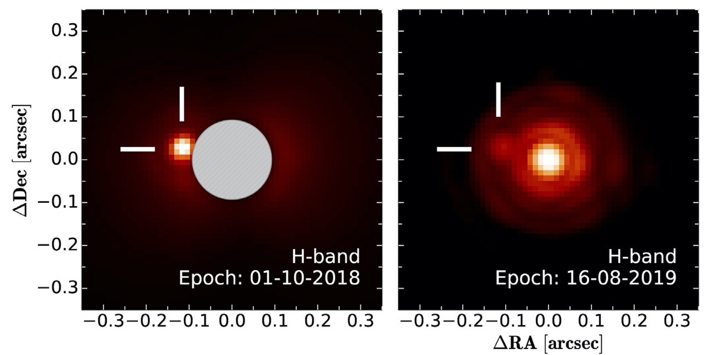The discovery of a substellar companion to RZ Psc provides an explanation for the frequent but irregular dimming events seen towards the star - material is peturbed by the companion.Kennedy et al. (2020) MNRAS, 496, 75.
A low-mass stellar companion to the young variable star RZ Psc
Kennedy, G. M., Ginski, C., Kenworthy, M. A., et al. (2020)
MNRAS, 496, L75 [ADS]
Robustness of prediction for extreme adaptive optics systems under various observing conditions. An analysis using VLT/SPHERE adaptive optics data
van Kooten, M. A. M., Doelman, N., & Kenworthy, M. (2020)
A&A, 636, A81 [ADS]
MASCARA-4 b/bRing-1 b: A retrograde hot Jupiter around a bright A-type star
Dorval, P., Talens, G. J. J., Otten, G. P. P. L., et al. (2020)
A&A, 635, A60 [ADS]
A multiplicity study of transiting exoplanet host stars. II. Revised properties of transiting planetary systems with companions
Southworth, J., Bohn, A. J., Kenworthy, M. A., Ginski, C., & Mancini, L. (2020)
A&A, 635, A74 [ADS]
A multiplicity study of transiting exoplanet host stars. I. High-contrast imaging with VLT/SPHERE
Bohn, A. J., Southworth, J., Ginski, C., et al. (2020)
A&A, 635, A73 [ADS]
The Young Suns Exoplanet Survey: Detection of a wide-orbit planetary-mass companion to a solar-type Sco-Cen member
Bohn, A. J., Kenworthy, M. A., Ginski, C., et al. (2020)
MNRAS, 492, 431 [ADS]
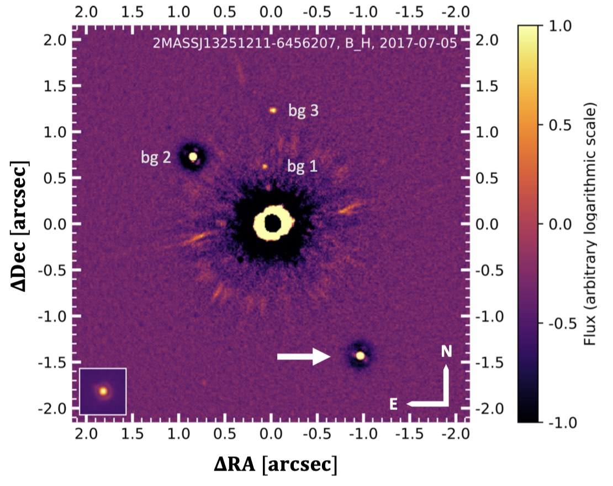The solar mass star TYC 8998 and its planetary mass companion TYC 8998b, indicated by a white arrow. Bohn et al. (2020) MNRAS, 492, 31.
A multiplicity study of transiting exoplanet host stars. II. Revised properties of transiting planetary systems with companions
Southworth, J., Bohn, A. J., Kenworthy, M. A., Ginski, C., & Mancini, L. (2020)
A&A, 635, A74 [ADS]
A multiplicity study of transiting exoplanet host stars. I. High-contrast imaging with VLT/SPHERE
Bohn, A. J., Southworth, J., Ginski, C., et al. (2020)
A&A, 635, A73 [ADS]
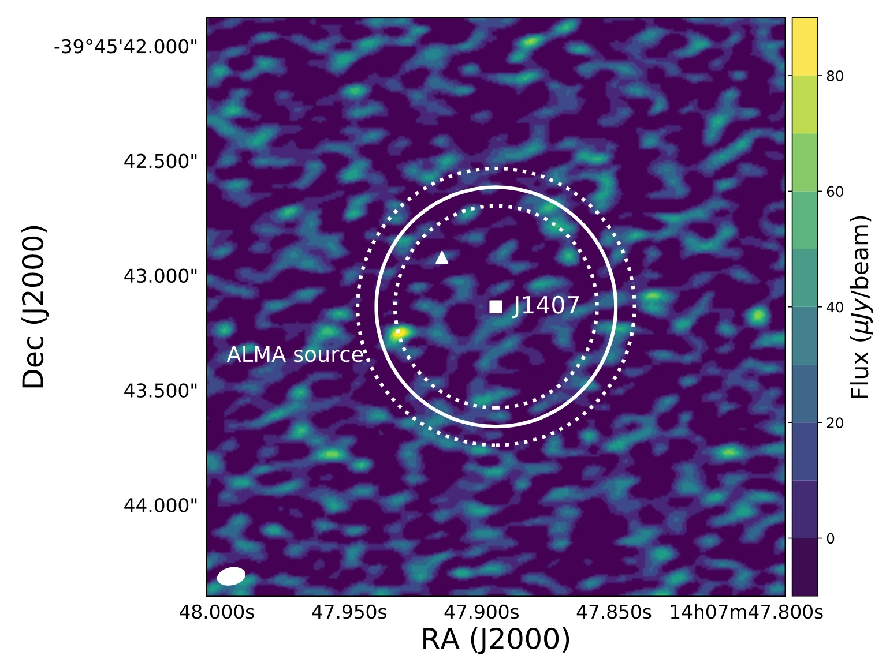An unresolved point source seen by ALMA towards the young star J1407. The detection may be a giant exoring system heated by its central source. The star is not seen at these wavelengths and sensitivities. Kenworthy et al. (2020) A&A, 633, 115.
ALMA and NACO observations towards the young exoring transit system J1407 (V1400 Cen)
Kenworthy, M. A., Klaassen, P. D., Min, M., et al. (2020)
A&A, 633, A115 [ADS]
High contrast imaging with ELT/METIS: The wind driven halo, from SPHERE to METIS
Cantalloube, F., Absil, O., Bertram, T., et al. (2019)
arXiv, arXiv:1911.11241 [ADS]
Bright Southern Variable Stars in the bRing Survey
Mellon, S. N., Mamajek, E. E., Stuik, R., et al. (2019)
ApJS, 244, 15 [ADS]
ESA Voyage 2050 White Paper: Detecting life outside our solar system with a large high-contrast-imaging mission
Snellen, I., Albrecht, S., Anglada-Escude, G., et al. (2019)
arXiv, arXiv:1908.01803 [ADS]
Revisiting the pulsational characteristics of the exoplanet host star β Pictoris
Zwintz, K., Reese, D. R., Neiner, C., et al. (2019)
A&A, 627, A28 [ADS]
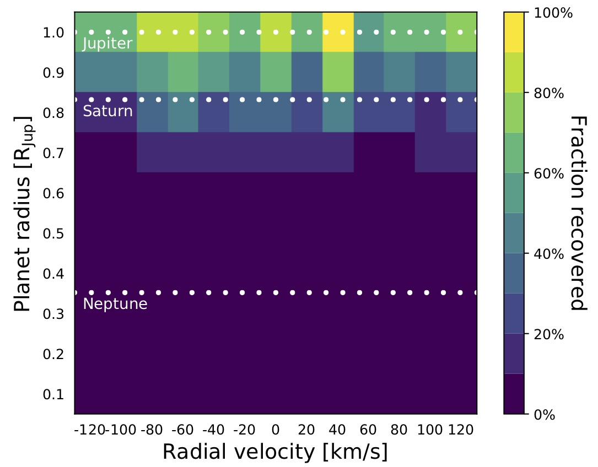Sensitivity of the spectroscopic transit search method applied to Beta Pictoris, showing that Saturn radius exoplanets can be recovered from high spectral resolution spectra of rapidly rotating stars without need for refernce star observations. Van Sluijs et al. (2019) A&A, 626, 97.
Spectroscopic transit search: a self-calibrating method for detecting planets around bright stars
van Sluijs, L., de Mooij, E., Kenworthy, M., et al. (2019)
A&A, 626, A97 [ADS]
The PDS 110 observing campaign - photometric and spectroscopic observations reveal eclipses are aperiodic
Osborn, H. P., Kenworthy, M., Rodriguez, J. E., et al. (2019)
MNRAS, 485, 1614 [ADS]
Impact of time-variant turbulence behavior on prediction for adaptive optics systems
van Kooten, M., Doelman, N., & Kenworthy, M. (2019)
JOSAA, 36, 731 [ADS]
Modeling Debris Disk Evolution
Gaspar, A., Apai, D., Augereau, J.-C., et al. (2019)
BAAS, 51, 69 [ADS]
Revisiting the pulsational characteristics of the exoplanet host star β Pictoris
Zwintz, K., Reese, D. R., Neiner, C., et al. (2019)
A&A, 627, A28 [ADS]
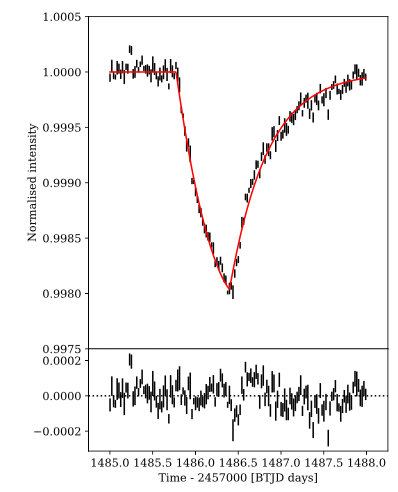Light curve of Beta Pictoris as seen by TESS. The stellar pulsations of the star have been removed, revealing the shark's tooth transit profile of an exocomet. The black vertical bars show the photometric error bar per data point. The red line is a model of an exocomet fit to the TESS data, and the residuals after the model has been removed are shown in the lower panel. Zieba et al. (2019) A&A, 625, 13.
Transiting exocomets detected in broadband light by TESS in the β Pictoris system
Zieba, S., Zwintz, K., Kenworthy, M. A., & Kennedy, G. M. (2019)
A&A, 625, L13 [ADS]
MASCARA-4 b/bRing-1 b: A retrograde hot Jupiter around a bright A-type star
Dorval, P., Talens, G. J. J., Otten, G. P. P. L., et al. (2020)
A&A, 635, A60 [ADS]
The Single-mode Complex Amplitude Refinement (SCAR) coronagraph. II. Lab verification, and toward the characterization of Proxima b
Haffert, S. Y., Por, E. H., Keller, C. U., et al. (2020)
A&A, 635, A56 [ADS]
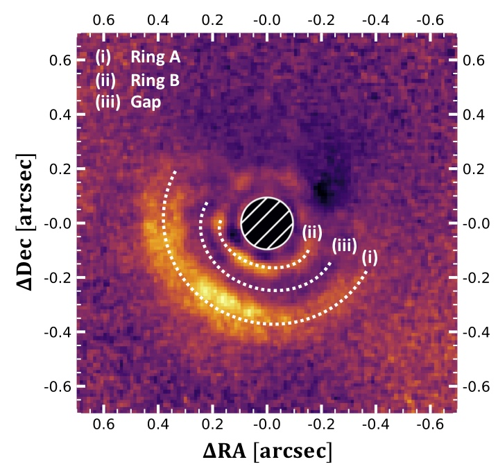Image of the circumstellar disk around Wray 15-788. Two rings are visible with a shadowed gap between them. An inner disk casts a shodown on the outer disk, hiding the rest of the circumstellar disks from view. Bohn et al. (2019) A&A, 64, 87.
Discovery of a directly imaged disk in scattered light around the Sco-Cen member Wray 15-788
Bohn, A. J., Kenworthy, M. A., Ginski, C., et al. (2019)
A&A, 624, A87 [ADS]
The little dippers: transits of star-grazing exocomets?
Ansdell, M., Gaidos, E., Jacobs, T. L., et al. (2019)
MNRAS, 483, 3579 [ADS]
Key Technologies for the Wide Field Infrared Survey Telescope Coronagraph Instrument
Bailey, V. P., Armus, L., Balasubramanian, B., et al. (2019)
arXiv, arXiv:1901.04050 [ADS]
Discovery of δ Scuti Pulsations in the Young Hybrid Debris Disk Star HD 156623
Mellon, S. N., Mamajek, E. E., Zwintz, K., et al. (2019)
ApJ, 870, 36 [ADS]
Post-conjunction detection of β Pictoris b with VLT/SPHERE
Lagrange, A.-M., Boccaletti, A., Langlois, M., et al. (2019)
A&A, 621, L8 [ADS]
Substellar and low-mass dwarf identification with near-infrared imaging space observatories
Holwerda, B. W., Bridge, J. S., Ryan, R., et al. (2018)
A&A, 620, A132 [ADS]
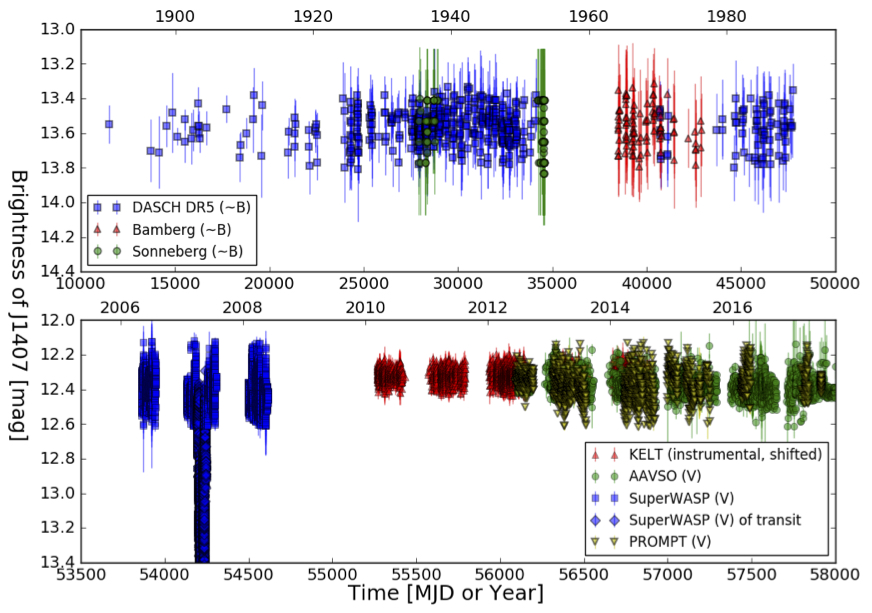Historical light curve of the young star J1407 with data collected over a range of epochs since 1900, used in a search for eclipses due to a putative ringed companion to the star. Mentel et al. (2018) A&A, 619, 157.
Constraining the period of the ringed secondary companion to the young star J1407 with photographic plates
Mentel, R. T., Kenworthy, M. A., Cameron, D. A., et al. (2018)
A&A, 619, A157 [ADS]
Data calibration for the MASCARA and bRing instruments
Talens, G. J. J., Deul, E. R., Stuik, R., et al. (2018)
A&A, 619, A154 [ADS]
Feasibility of the debris ring transit method for the solar-like star HD 107146 by an occulted galaxy
van Sluijs, L., Vaendel, D. A. J. H., Holwerda, B. W., Kenworthy, M. A., & Schneider, G. (2018)
MNRAS, 480, 914 [ADS]
Review of high-contrast imaging systems for current and future ground- and space-based telescopes I: coronagraph design methods and optical performance metrics
Ruane, G., Riggs, A., Mazoyer, J., et al. (2018)
SPIE, 10698, 106982S [ADS]
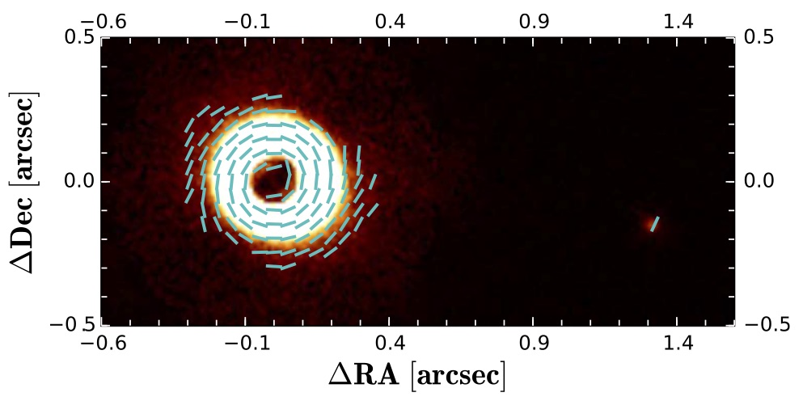An image in polarised light of the young star CS Cha showing a circumetellar disk. A faint companion to the star is visible, showing a large degree of linear polarisation of around 18%. Ginski et al. (2018) A&A 616, 79.
First direct detection of a polarized companion outside a resolved circumbinary disk around CS Chamaeleonis
Ginski, C., Benisty, M., van Holstein, R. G., et al. (2018)
A&A, 616, A79 [ADS]
Design of the ERIS instrument control software
Baruffolo, A., Salasnich, B., Puglisi, A., et al. (2018)
SPIE, 10707, 107071H [ADS]
Modeling of a stepped Luneberg lens for all-sky surveys
Carney, M., & Kenworthy, M. A. (2018)
SPIE, 10706, 107063H [ADS]
Review of high-contrast imaging systems for current and future ground-based and space-based telescopes III: technology opportunities and pathways
Snik, F., Absil, O., Baudoz, P., et al. (2018)
SPIE, 10706, 107062L [ADS]
The hunt for Sirius Ab: comparison of algorithmic sky and PSF estimation performance in deep coronagraphic thermal-IR high contrast imaging
Long, J. D., Males, J. R., Morzinski, K. M., et al. (2018)
SPIE, 10703, 107032T [ADS]
Implications for contrast as a result of the wind vector and non-stationary turbulence
van Kooten, M. A. M., Doelman, N., & Kenworthy, M. (2018)
SPIE, 10703, 107032C [ADS]
Review of high-contrast imaging systems for current and future ground-based and space-based telescopes: Part II. Common path wavefront sensing/control and coherent differential imaging
Jovanovic, N., Absil, O., Baudoz, P., et al. (2018)
SPIE, 10703, 107031U [ADS]
Single conjugate adaptive optics for METIS
Bertram, T., Absil, O., Bizenberger, P., et al. (2018)
SPIE, 10703, 1070314 [ADS]
MagAO-X: project status and first laboratory results
Males, J. R., Close, L. M., Miller, K., et al. (2018)
SPIE, 10703, 1070309 [ADS]
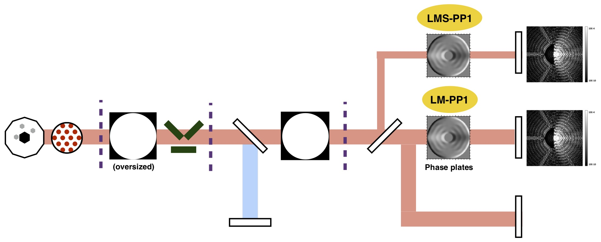An abstracted layout of the optical path of METIS, an instrument for the European Extremely Large Telescope. The grating vector Apodizing Phase Plate locations are shown. Kenworthy et al. (2018) SPIE 10702, 10702A3.
A review of high contrast imaging modes for METIS
Kenworthy, M. A., Absil, O., Carlomagno, B., et al. (2018)
SPIE, 10702, 10702A3 [ADS]
A precursor mission to high contrast imaging balloon system
Côté, O., Allain, G., Brousseau, D., et al. (2018)
SPIE, 10702, 1070248 [ADS]
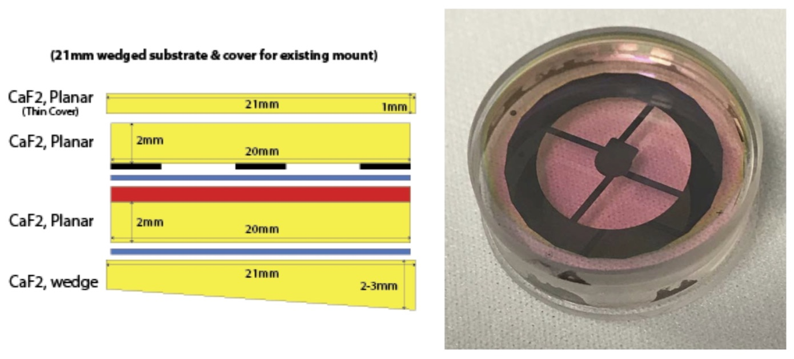The grating vector Apodizing Phase Plate for the ERIS camera, comprised of a liquid crystal substrate between glass plates. Kenworthy et al. (2018) SPIE 10702, 1070246.
High contrast imaging for the enhanced resolution imager and spectrometer (ERIS)
Kenworthy, M. A., Snik, F., Keller, C. U., et al. (2018)
SPIE, 10702, 1070246 [ADS]
Cryogenic characterization of the grating vector APP coronagraph for the upcoming ERIS instrument at the VLT
Boehle, A., Glauser, A. M., Kenworthy, M. A., et al. (2018)
SPIE, 10702, 107023Y [ADS]
Status of the mid-IR ELT imager and spectrograph (METIS)
Brandl, B. R., Absil, O., Agócs, T., et al. (2018)
SPIE, 10702, 107021U [ADS]
ERIS: revitalising an adaptive optics instrument for the VLT
Davies, R., Esposito, S., Schmid, H.-M., et al. (2018)
SPIE, 10702, 1070209 [ADS]
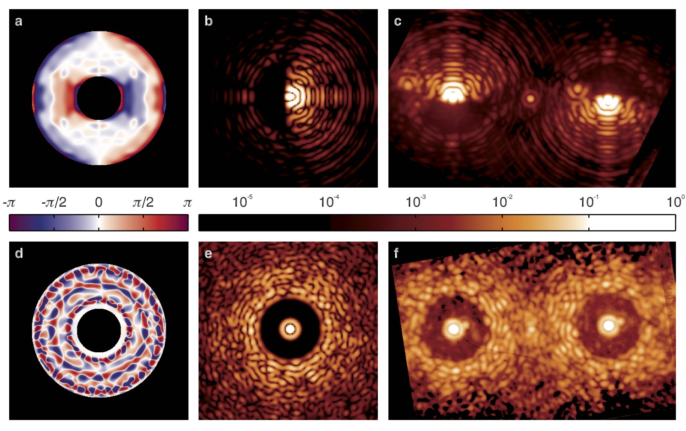gvAPP coronagraph designs in theory and practise with on-sky images. Chapter from "Handbook of Astronomical Instrumentation", Vol. 3.
Pupil Plane Phase Apodization
Kenworthy, M. A., Codona, J. L., & Snik, F. (2018)
"Handbook of Astronomical Instrumentation", Vol. 3, eds. A. Moore and D. Burrows, WSPC[ADS]
A search for transiting planets in the β Pictoris system
Mol Lous, M., Weenk, E., Kenworthy, M. A., Zwintz, K., & Kuschnig, R. (2018)
A&A, 615, A145 [ADS]
The Pre-main Sequence Population of Sco-Cen Unveiled with Gaia DR2
Villa Vélez, J. A., Brown, A. G. A., & Kenworthy, M. A. (2018)
RNAAS, 2, 58 [ADS]
A Planet with a Disc? A Surprising Detection in Polarised Light with VLT/SPHERE
Ginski, C., van Holstein, R., Juhász, A., et al. (2018)
Msngr, 172, 27 [ADS]
SUPERSHARP - Segmented Unfolding Primary for Exoplanet Research via Spectroscopic High Angular Resolution Photography
Parry, I., Queloz, D., Kennedy, G., et al. (2018)
arXiv, arXiv:1801.06111 [ADS]
A New Standard for Assessing the Performance of High Contrast Imaging Systems
Jensen-Clem, R., Mawet, D., Gomez Gonzalez, C. A., et al. (2018)
AJ, 155, 19 [ADS]
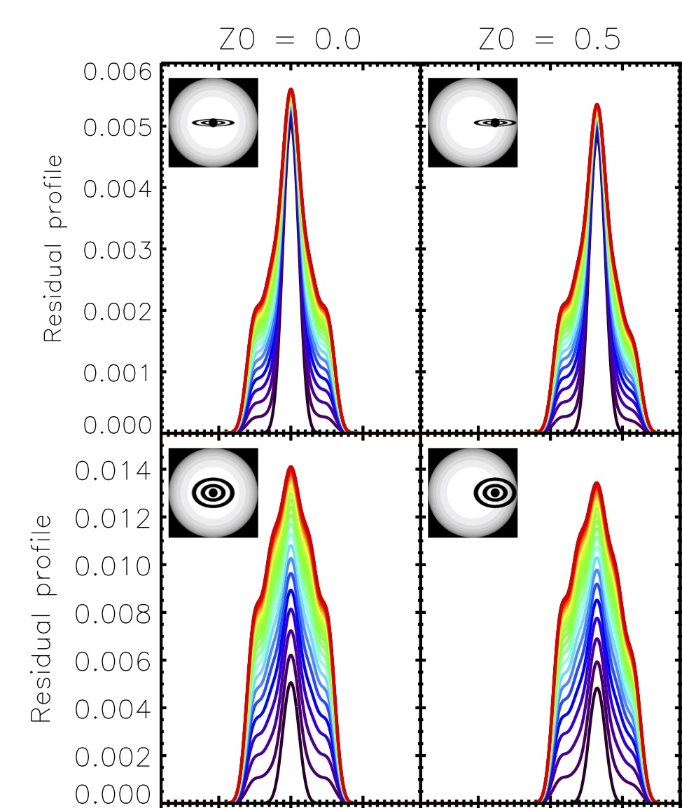A ringed planet transiting in front of a rapidly rotating star will distort the stellar line profiles and can distinghish the obliquity of the ring system. de Mooij et al. (2017) MNRAS 472, 2713.
Characterizing exo-ring systems around fast-rotating stars using the Rossiter-McLaughlin effect
de Mooij, E. J. W., Watson, C. A., & Kenworthy, M. A. (2017)
MNRAS, 472, 2713 [ADS]
bRing: An observatory dedicated to monitoring the β Pictoris b Hill sphere transit
Stuik, R., Bailey, J. I., Dorval, P., et al. (2017)
A&A, 607, A45 [ADS]
Periodic eclipses of the young star PDS 110 discovered with WASP and KELT photometry
Osborn, H. P., Rodriguez, J. E., Kenworthy, M. A., et al. (2017)
MNRAS, 471, 740 [ADS]
Three Years of SPHERE: The Latest View of the Morphology and Evolution of Protoplanetary Discs
Garufi, A., Benisty, M., Stolker, T., et al. (2017)
Msngr, 169, 32 [ADS]
Looking for rings and things
Kenworthy, M. (2017)
NatAs, 1, 0099 [ADS]
The transiting dust clumps in the evolved disc of the Sun-like UXor RZ Psc
Kennedy, G. M., Kenworthy, M. A., Pepper, J., et al. (2017)
RSOS, 4, 160652 [ADS]
On-sky Performance Analysis of the Vector Apodizing Phase Plate Coronagraph on MagAO/Clio2
Otten, G. P. P. L., Snik, F., Kenworthy, M. A., et al. (2017)
ApJ, 834, 175 [ADS]
The peculiar dipping events in the disc-bearing young-stellar object EPIC 204278916
Scaringi, S., Manara, C. F., Barenfeld, S. A., et al. (2016)
MNRAS, 463, 2265 [ADS]
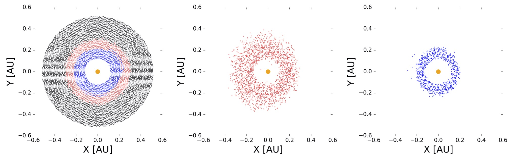Exploring how large a ring system can be sustained around J1407 with retrograde (red) and prograde (blue) orbits, implying a mass for J1407b of around 80 Jupiter masses.Rieder and Kenworthy (2016) A&A, 596, 9.
Constraints on the size and dynamics of the J1407b ring system
Rieder, S., & Kenworthy, M. A. (2016)
A&A, 596, A9 [ADS]
Direct detection of scattered light gaps in the transitional disk around HD 97048 with VLT/SPHERE
Ginski, C., Stolker, T., Pinilla, P., et al. (2016)
A&A, 595, A112 [ADS]
The Astropy Problem
Muna, D., Alexander, M., Allen, A., et al. (2016)
arXiv, arXiv:1610.03159 [ADS]
All NIRspec Needs is HST/WFC3 Pre-Imaging? The Use of Milky Way Stars in WFC3 Imaging to Register NIRspec MSA Observations
Holwerda, B. W., Bouwens, R. J., Trenti, M., & Kenworthy, M. A. (2016)
JAI, 5, 1650008 [ADS]
High-contrast imaging with METIS
Kenworthy, M. A., Absil, O., Agócs, T., et al. (2016)
SPIE, 9908, 9908A6 [ADS]
Preliminary optical design for the common fore optics of METIS
Agócs, T., Brandl, B. R., Jager, R., et al. (2016)
SPIE, 9908, 99089Q [ADS]
NIX, the imager for ERIS: the AO instrument for the VLT
Pearson, D., Taylor, W., Davies, R., et al. (2016)
SPIE, 9908, 99083F [ADS]
Status of the mid-infrared E-ELT imager and spectrograph METIS
Brandl, B. R., Agócs, T., Aitink-Kroes, G., et al. (2016)
SPIE, 9908, 990820 [ADS]
Polarization dOTF: on-sky focal plane wavefront sensing
Brooks, K. J., Catala, L., Kenworthy, M. A., Crawford, S. M., & Codona, J. L. (2016)
SPIE, 9912, 991203 [ADS]
End-to-end simulations of the E-ELT/METIS coronagraphs
Carlomagno, B., Absil, O., Kenworthy, M., et al. (2016)
SPIE, 9909, 990973 [ADS]
The path to visible extreme adaptive optics with MagAO-2K and MagAO-X
Males, J. R., Close, L. M., Guyon, O., et al. (2016)
SPIE, 9909, 990952 [ADS]
Designing the METIS SCAO and LTAO systems
Stuik, R., Feldt, M., Hippler, S., et al. (2016)
SPIE, 9909, 99090B [ADS]
The size and shape of the Milky Way disc and halo from M-type brown dwarfs in the BoRG survey
van Vledder, I., van der Vlugt, D., Holwerda, B. W., et al. (2016)
MNRAS, 458, 425 [ADS]
A narrow, edge-on disk resolved around HD 106906 with SPHERE
Lagrange, A.-M., Langlois, M., Gratton, R., et al. (2016)
A&A, 586, L8 [ADS]
Modeling of a Giant Exoring System Around the Substellar Companion J1407b
Kenworthy, M. A., & Mamajek, E. E. (2016)
IAUS, 314, 171 [ADS]
Rings of a Super Saturn
Kenworthy, M. (2015)
SciAm, 314, 34 [ADS]
Searching for gas giant planets on Solar system scales - a NACO/APP L'-band survey of A- and F-type main-sequence stars
Meshkat, T., Kenworthy, M. A., Reggiani, M., et al. (2015)
MNRAS, 453, 2533 [ADS]
Discovery of a low-mass companion to the F7V star HD 984
Meshkat, T., Bonnefoy, M., Mamajek, E. E., et al. (2015)
MNRAS, 453, 2378 [ADS]
A Transiting Extrasolar Ring System: Indirect Evidence for Exosatellite Formation?
Kenworthy, M. A., & Mamajek, E. E. (2015)
EPSC, EPSC2015-756 [ADS]
Exoplanet science with the LBTI: instrument status and plans
Defrère, D., Hinz, P., Skemer, A., et al. (2015)
SPIE, 9605, 96051G [ADS]
The dependence of the AV prior for SN Ia on host mass and disc inclination
Holwerda, B. W., Keel, W. C., Kenworthy, M. A., & Mack, K. J. (2015)
MNRAS, 451, 2390 [ADS]
Confirmation and Characterization of the Protoplanet HD 100546 b—Direct Evidence for Gas Giant Planet Formation at 50 AU
Quanz, S. P., Amara, A., Meyer, M. R., et al. (2015)
ApJ, 807, 64 [ADS]
Combining high-dispersion spectroscopy with high contrast imaging: Probing rocky planets around our nearest neighbors
Snellen, I., de Kok, R., Birkby, J. L., et al. (2015)
A&A, 576, A59 [ADS]
Modeling Giant Extrasolar Ring Systems in Eclipse and the Case of J1407b: Sculpting by Exomoons?
Kenworthy, M. A., & Mamajek, E. E. (2015)
ApJ, 800, 126 [ADS]
Searching for Planets in Holey Debris Disks with the Apodizing Phase Plate
Meshkat, T., Bailey, V. P., Su, K. Y. L., et al. (2015)
ApJ, 800, 5 [ADS]
Mass and period limits on the ringed companion transiting the young star J1407
Kenworthy, M. A., Lacour, S., Kraus, A., et al. (2015)
MNRAS, 446, 411 [ADS]
Performance characterization of a broadband vector Apodizing Phase Plate coronagraph
Otten, G. P. P. L., Snik, F., Kenworthy, M. A., Miskiewicz, M. N., & Escuti, M. J. (2014)
OExpr, 22, 30287 [ADS]
Fundamental Limitations of High Contrast Imaging Set by Small Sample Statistics
Mawet, D., Milli, J., Wahhaj, Z., et al. (2014)
ApJ, 792, 97 [ADS]
Focal-plane wavefront sensing with high-order adaptive optics systems
Korkiakoski, V., Keller, C. U., Doelman, N., et al. (2014)
SPIE, 9148, 91485D [ADS]
Combining vector-phase coronagraphy with dual-beam polarimetry
Snik, F., Otten, G., Kenworthy, M., Mawet, D., & Escuti, M. (2014)
SPIE, 9147, 91477U [ADS]
METIS: the mid-infrared E-ELT imager and spectrograph
Brandl, B. R., Feldt, M., Glasse, A., et al. (2014)
SPIE, 9147, 914721 [ADS]
L'-band AGPM vector vortex coronagraph's first light on LBTI/LMIRCam
Defrère, D., Absil, O., Hinz, P., et al. (2014)
SPIE, 9148, 91483X [ADS]
Analysis of 1SWASP J140747.93-394542.6 eclipse fine-structure: hints of exomoons
van Werkhoven, T. I. M., Kenworthy, M. A., & Mamajek, E. E. (2014)
MNRAS, 441, 2845 [ADS]
Fast & Furious focal-plane wavefront sensing
Korkiakoski, V., Keller, C. U., Doelman, N., et al. (2014)
ApOpt, 53, 4565 [ADS]
WTS-2 b: a hot Jupiter orbiting near its tidal destruction radius around a K dwarf
Birkby, J. L., Cappetta, M., Cruz, P., et al. (2014)
MNRAS, 440, 1470 [ADS]
Feasibility of transit photometry of nearby debris discs
Zeegers, S. T., Kenworthy, M. A., & Kalas, P. (2014)
MNRAS, 439, 488 [ADS]
Testing Optimized Principal Component Analysis on Coronagraphic Images of the Fomalhaut System
Meshkat, T., Kenworthy, M., Quanz, S. P., & Amara, A. (2014)
IAUS, 299, 56 [ADS]
Successes and challenges of the APP Coronagraph
Kenworthy, M. A., Quanz, S., Otten, G., et al. (2014)
IAUS, 299, 40 [ADS]
HD 106906 b: A Planetary-mass Companion Outside a Massive Debris Disk
Bailey, V., Meshkat, T., Reiter, M., et al. (2014)
ApJL, 780, L4 [ADS]
Optimized Principal Component Analysis on Coronagraphic Images of the Fomalhaut System
Meshkat, T., Kenworthy, M. A., Quanz, S. P., & Amara, A. (2014)
ApJ, 780, 17 [ADS]
Confirmation of the Planet around HD 95086 by Direct Imaging
Rameau, J., Chauvin, G., Lagrange, A.-M., et al. (2013)
ApJL, 779, L26 [ADS]
The Solar Neighborhood. XXX. Fomalhaut C
Mamajek, E. E., Bartlett, J. L., Seifahrt, A., et al. (2013)
AJ, 146, 154 [ADS]
Calibrating a high-resolution wavefront corrector with a static focal-plane camera
Korkiakoski, V., Doelman, N., Codona, J., et al. (2013)
ApOpt, 52, 7554 [ADS]
Further Evidence of the Planetary Nature of HD 95086 b from Gemini/NICI H-band Data
Meshkat, T., Bailey, V., Rameau, J., et al. (2013)
ApJL, 775, L40 [ADS]
SPHERE-ZIMPOL system testing: status report on polarimetric high contrast results
Roelfsema, R., Gisler, D., Pragt, J., et al. (2013)
SPIE, 8864, 88640C [ADS]
Mini Solar Systems in Formation: Modeling of Circumsecondary Disk Eclipses
Scott, E., Mamajek, E., Moolekamp, F., et al. (2013)
prpl.conf, [ADS]
A giant planet around HD95086 ?
Rameau, J., Chauvin, G., Lagrange, A.-M., et al. (2013)
prpl.conf, [ADS]
MASCARA: The Multi-site All-Sky CAmeRA
Snellen, I., Stuik, R., Otten, G., et al. (2013)
EPJWC, 47, 03008 [ADS]
Focal Plane Wavefront Sensing Using Residual Adaptive Optics Speckles
Codona, J. L., & Kenworthy, M. (2013)
ApJ, 767, 100 [ADS]
A Young Protoplanet Candidate Embedded in the Circumstellar Disk of HD 100546
Quanz, S. P., Amara, A., Meyer, M. R., et al. (2013)
ApJL, 766, L1 [ADS]
Coronagraphic Observations of Fomalhaut at Solar System Scales
Kenworthy, M. A., Meshkat, T., Quanz, S. P., et al. (2013)
ApJ, 764, 7 [ADS]
The GROUSE project. III. Ks-band observations of the thermal emission from WASP-33b
de Mooij, E. J. W., Brogi, M., de Kok, R. J., et al. (2013)
A&A, 550, A54 [ADS]
Innovative technology for optical and infrared astronomy
Cunningham, C. R., Evans, C. J., Molster, F., et al. (2012)
SPIE, 8450, 845031 [ADS]
The vector-APP: a broadband apodizing phase plate that yields complementary PSFs
Snik, F., Otten, G., Kenworthy, M., et al. (2012)
SPIE, 8450, 84500M [ADS]
Laboratory demonstration and characterization of phase-sorting interferometry
Otten, G. P., Kenworthy, M. A., & Codona, J. L. (2012)
SPIE, 8446, 84469F [ADS]
On-sky operations and performance of LMIRcam at the Large Binocular Telescope
Leisenring, J. M., Skrutskie, M. F., Hinz, P. M., et al. (2012)
SPIE, 8446, 84464F [ADS]
Ground-based search for the brightest transiting planets with the Multi-site All-Sky CAmeRA: MASCARA
Snellen, I. A. G., Stuik, R., Navarro, R., et al. (2012)
SPIE, 8444, 84440I [ADS]
Evidence for the disintegration of KIC 12557548 b
Brogi, M., Keller, C. U., de Juan Ovelar, M., et al. (2012)
A&A, 545, L5 [ADS]
Infrared Variability of the Gliese 569B System
Kenworthy, M. A., & Scuderi, L. J. (2012)
ApJ, 752, 131 [ADS]
Planetary Construction Zones in Occultation: Discovery of an Extrasolar Ring System Transiting a Young Sun-like Star and Future Prospects for Detecting Eclipses by Circumsecondary and Circumplanetary Disks
Mamajek, E. E., Quillen, A. C., Pecaut, M. J., et al. (2012)
AJ, 143, 72 [ADS]
On-sky demonstration of focal plane wavefront sensing and quasi-static speckle suppression
Kenworthy, M., & Codona, J. (2011)
aoel.conf, 21 [ADS]
Searching for Gas Giant Planets on Solar System Scales: VLT NACO/APP Observations of the Debris Disk Host Stars HD172555 and HD115892
Quanz, S. P., Kenworthy, M. A., Meyer, M. R., Girard, J. H. V., & Kasper, M. (2011)
ApJL, 736, L32 [ADS]
Piercing the Glare: A Direct Imaging Search for Planets in the Sirius System
Thalmann, C., Usuda, T., Kenworthy, M., et al. (2011)
ApJL, 732, L34 [ADS]
First Results from Very Large Telescope NACO Apodizing Phase Plate: 4 μm Images of The Exoplanet β Pictoris b
Quanz, S. P., Meyer, M. R., Kenworthy, M. A., et al. (2010)
ApJL, 722, L49 [ADS]
A New Coronagraph for NAOS-CONICA -- the Apodising Phase Plate
Kenworthy, M., Quanz, S., Meyer, M., et al. (2010)
Msngr, 141, 2 [ADS]
Status and new operation modes of the versatile VLT/NaCo
Girard, J. H. V., Kasper, M., Quanz, S. P., et al. (2010)
SPIE, 7736, 77362N [ADS]
An apodizing phase plate coronagraph for VLT/NACO
Kenworthy, M. A., Quanz, S. P., Meyer, M. R., et al. (2010)
SPIE, 7735, 773532 [ADS]
Developing achromatic coronagraphic optics for LMIRCam and the LBT
Kenworthy, M. A., Hinz, P. M., Codona, J. L., et al. (2010)
SPIE, 7734, 77342P [ADS]
Thermal Infrared MMTAO Observations of the HR 8799 Planetary System
Hinz, P. M., Rodigas, T. J., Kenworthy, M. A., et al. (2010)
ApJ, 716, 417 [ADS]
Constraints on Long-period Planets from an L'- and M-band Survey of Nearby Sun-like Stars: Modeling Results
Heinze, A. N., Hinz, P. M., Kenworthy, M., et al. (2010)
ApJ, 714, 1570 [ADS]
Constraints on Long-period Planets from an L'- and M-band Survey of Nearby Sun-like Stars: Observations
Heinze, A. N., Hinz, P. M., Sivanandam, S., et al. (2010)
ApJ, 714, 1551 [ADS]
Discovery of a Faint Companion to Alcor Using MMT/AO 5 μm Imaging
Mamajek, E. E., Kenworthy, M. A., Hinz, P. M., & Meyer, M. R. (2010)
AJ, 139, 919 [ADS]
Imaging the Cool Hypergiant NML Cygni's Dusty Circumstellar Envelope with Adaptive Optics
Schuster, M. T., Marengo, M., Hora, J. L., et al. (2009)
ApJ, 699, 1423 [ADS]
MMT/AO 5 μm Imaging Constraints on the Existence of Giant Planets Orbiting Fomalhaut at ~13-40 AU
Kenworthy, M. A., Mamajek, E. E., Hinz, P. M., et al. (2009)
ApJ, 697, 1928 [ADS]
Overview of Technologies for Direct Optical Imaging of Exoplanets
Levine, M., Soummer, R., Arenberg, J., et al. (2009)
astro, 2010, 37 [ADS]
Observations of Main-Sequence Stars and Limits on Exozodical Dust with Nulling Interferometry
Liu, W. M., Hinz, P. M., Hoffmann, W. F., et al. (2009)
ApJ, 693, 1500 [ADS]
Exoplanet Characterization and the Search for Life
Kasting, J., Traub, W., Roberge, A., et al. (2009)
astro, 2010, 151 [ADS]
The Lagoon Nebula and its Vicinity
Tothill, N. F. H., Gagné, M., Stecklum, B., & Kenworthy, M. A. (2008)
hsf2.book, 5, 533 [ADS]
Deep L'- and M-band Imaging for Planets around Vega and epsilon Eridani
Heinze, A. N., Hinz, P. M., Kenworthy, M., Miller, D., & Sivanandam, S. (2008)
ApJ, 688, 583 [ADS]
Adaptive optics for the SALT
Kenworthy, M. A., Sheinis, A., & Buckley, D. A. H. (2008)
SPIE, 7015, 701563 [ADS]
A novel WFS technique for high-contrast imaging: Phase Sorting Interferometry (PSI)
Codona, J. L., Kenworthy, M. A., & Lloyd-Hart, M. (2008)
SPIE, 7015, 70155D [ADS]
LMIRcam: an L/M-band imager for the LBT combined focus
Wilson, J. C., Hinz, P. M., Skrutskie, M. F., et al. (2008)
SPIE, 7013, 70133A [ADS]
Evidence for Misaligned Disks in the T Tauri Triple System: 10 μm Superresolution with MMTAO and Markov Chains
Skemer, A. J., Close, L. M., Hinz, P. M., et al. (2008)
ApJ, 676, 1082 [ADS]
Reference-less Detection, Astrometry, and Photometry of Faint Companions with Adaptive Optics at 1, 2 and 5 ?m
Gladysz, S., Christou, J., Kenworthy, M., Law, N., & Dekany, R. (2008)
amos.conf, E42 [ADS]
An Imaging Survey for Extrasolar Planets around 45 Close, Young Stars with the Simultaneous Differential Imager at the Very Large Telescope and MMT
Biller, B. A., Close, L. M., Masciadri, E., et al. (2007)
ApJS, 173, 143 [ADS]
Lithium in LP944-20
Pavlenko, Y. V., Jones, H. R. A., Martín, E. L., et al. (2007)
MNRAS, 380, 1285 [ADS]
LMIRCam 3-5 micron Imager for the LBT Combined Focus
Wilson, J. C., Hinz, P., Kenworthy, M., et al. (2007)
lyot.conf, 51 [ADS]
Exoplanet Surveys at Five Microns with Direct and APP Imaging at the MMT Observatory
Kenworthy, M. A., Hinz, P. M., Codona, J. L., et al. (2007)
lyot.conf, 23 [ADS]
Manufacturing of a freeform phase plate for suppression of diffraction in an astronomical telescope
Davis, G. E., Kenworthy, M. A., & Hedges, A. R. (2007)
SPIE, 10316, 1031613 [ADS]
First On-Sky High-Contrast Imaging with an Apodizing Phase Plate
Kenworthy, M. A., Codona, J. L., Hinz, P. M., et al. (2007)
ApJ, 660, 762 [ADS]
Observations of Herbig Ae Disks with Nulling Interferometry
Liu, W. M., Hinz, P. M., Meyer, M. R., et al. (2007)
ApJ, 658, 1164 [ADS]
High Contrast Imaging at 3-5 microns
Hinz, P., Kenworthy, M., Heinze, A., Codona, J., & Angel, R. (2007)
amos.conf, E58 [ADS]
Thermal Infrared Constraint to a Planetary Companion of Vega with the MMT Adaptive Optics System
Hinz, P. M., Heinze, A. N., Sivanandam, S., et al. (2006)
ApJ, 653, 1486 [ADS]
Comet C/2006 M4 (Swan)
Woodward, C. E., Kelley, M. S., Hinz, P. M., Kenworthy, M. A., & Hoffman, W. F. (2006)
IAUC, 8772, 1 [ADS]
A visible/infra-red low noise, fast readout wavefront sensor for all-sky adaptive optics
Kenworthy, M. A., Hinz, P. M., Sivanandam, S., Breuninger, A. H., & Low, F. J. (2006)
SPIE, 6276, 62760V [ADS]
Whack-a-speckle: focal plane wavefront sensing in theory and practice with a deformable secondary mirror and 5-micron camera
Kenworthy, M. A., Hinz, P. M., Angel, J. R. P., Heinze, A. N., & Sivanandam, S. (2006)
SPIE, 6272, 62723B [ADS]
A high-contrast coronagraph for the MMT using phase apodization: design and observations at 5 microns and 2 λ/D radius
Codona, J. L., Kenworthy, M. A., Hinz, P. M., Angel, J. R. P., & Woolf, N. J. (2006)
SPIE, 6269, 62691N [ADS]
SDSS J102111.02+491330.4: A Newly Discovered Gravitationally Lensed Quasar
Pindor, B., Eisenstein, D. J., Gregg, M. D., et al. (2006)
AJ, 131, 41 [ADS]
A Medium Resolution Near-Infrared Spectral Atlas of O and Early-B Stars
Hanson, M. M., Kudritzki, R.-P., Kenworthy, M. A., Puls, J., & Tokunaga, A. T. (2005)
ApJS, 161, 154 [ADS]
The IMF in extreme star-forming environments: Searching for variations vs. initial conditions
Andersen, M., Meyer, M. R., Greissl, J., et al. (2005)
IAUS, 227, 285 [ADS]
Gould's Belt to Starburst Galaxies: The IMF of Extreme Star Formation
Meyer, M. R., Greissl, J., Kenworthy, M., & McCarthy, D. (2005)
ASSL, 327, 245 [ADS]
Resolved Mid-Infrared Emission around AB Aurigae and V892 Tauri with Adaptive Optics Nulling Interferometric Observations
Liu, W. M., Hinz, P. M., Hoffmann, W. F., et al. (2005)
ApJL, 618, L133 [ADS]
Scientific results from the MMT Natural Guide Star Adaptive Optics System
Kenworthy, M. A., Miller, D. L., Brusa, G., et al. (2004)
SPIE, 5490, 351 [ADS]
Status of the NGS adaptive optic system at the MMT Telescope
Miller, D. L., Brusa, G., Kenworthy, M. A., Hinz, P. M., & Fisher, D. L. (2004)
SPIE, 5490, 207 [ADS]
MMT-AO: two years of operation with the first adaptive secondary
Brusa, G., Miller, D. L., Kenworthy, M. A., Fisher, D. L., & Riccardi, A. (2004)
SPIE, 5490, 23 [ADS]
Adaptive Optics Nulling Interferometric Constraints on the Mid-Infrared Exozodiacal Dust Emission around Vega
Liu, W. M., Hinz, P. M., Hoffmann, W. F., et al. (2004)
ApJL, 610, L125 [ADS]
Minimizing Strong Telluric Absorption in Near-Infrared Stellar Spectra
Kenworthy, M. A., & Hanson, M. M. (2004)
PASP, 116, 97 [ADS]
Direct Detection of Thermal Emission from Extra-Solar Planets
Kenworthy, M., Hinz, P., & Angel, R. (2004)
IAUS, 202, 455 [ADS]
Progress toward science results with the ACES spectrograph
Reynolds, R. O., Lloyd-Hart, M., Lesser, M. P., Kenworthy, M. A., & Ge, J. (2003)
SPIE, 4841, 1705 [ADS]
Spectrophotometry with a Transmission Grating for Detecting Faint Occultations
Kenworthy, M. A., & Hinz, P. M. (2003)
PASP, 115, 322 [ADS]
The Structure and Evolution of the Lagoon Nebula. I. Submillimeter Continuum and CO Line Mapping
Tothill, N. F. H., White, G. J., Matthews, H. E., et al. (2002)
ApJ, 580, 285 [ADS]
A search for radio emission from Galactic supersoft X-ray sources
Ogley, R. N., Chaty, S., Crocker, M., et al. (2002)
MNRAS, 330, 772 [ADS]
Gliese 569B: A Young Multiple Brown Dwarf System?
Kenworthy, M., Hofmann, K.-H., Close, L., et al. (2001)
ApJL, 554, L67 [ADS]
SPIRAL Phase A: A Prototype Integral Field Spectrograph for the Anglo-AustralianTelescope
Kenworthy, M. A., Parry, I. R., & Taylor, K. (2001)
PASP, 113, 215 [ADS]
Stretched membrane with electrostatic curvature (SMEC): a new technology for ultralightweight space telescopes
Angel, J. R. P., Burge, J. H., Hege, E. K., Kenworthy, M. A., & Woolf, N. J. (2000)
SPIE, 4013, 699 [ADS]
Adaptive optics for the 6.5-m MMT
Lloyd-Hart, M., Wildi, F. P., Martin, B., et al. (2000)
SPIE, 4007, 167 [ADS]
The development of new techniques for integral field spectroscopy in astronomy
Kenworthy, M. A. (2000)
Obs, 120, 81 [ADS]
The Super Huge Interferometric Telescope: A New Paradigm In Optical Interferometry
Rudnick, G., Charfman, J. J., Bailin, J., et al. (1999)
AAS, 195, 87.13 [ADS]
Construction and testing of the wavefront sensor camera for the new MMT adaptive optics system
Mcguire, P. C., Rhoadarmer, T. A., Lloyd-Hart, M., et al. (1999)
SPIE, 3762, 269 [ADS]
Laboratory adaptive optics system for testing the wavefront sensor for the new MMT
Rhoadarmer, T. A., Mcguire, P. C., Hughes, J. M., et al. (1999)
SPIE, 3762, 161 [ADS]
Full-system laboratory testing of the F/15 deformable secondary mirror for the new MMT adaptive optics system
Mcguire, P. C., Lloyd-Hart, M., Angel, J. R. P., et al. (1999)
SPIE, 3762, 28 [ADS]
The Development Of New Techniques For Integral Field Spectroscopy In Astronomy
Kenworthy, M. A. (1998)
PhDT, [ADS]
Cambridge OH suppression instrument (COHSI): status after first commissioning run
Ennico, K. A., Parry, I. R., Kenworthy, M. A., et al. (1998)
SPIE, 3354, 668 [ADS]
Infrared imaging and spectroscopy with HAWAII and PICNIC arrays
Mackay, C. D., Beckett, M. G., McMahon, R. G., et al. (1998)
SPIE, 3354, 14 [ADS]
Integral field units for SPIRAL and COHSI
Kenworthy, M. A., Parry, I. R., & Taylor, K. (1998)
SPIE, 3355, 926 [ADS]
COHSI: a Lens Array and Fiber Feed for the Near Infrared
Kenworthy, M. A., Parry, I. R., & Ennico, K. A. (1998)
ASPC, 152, 300 [ADS]
SN 1987A: the next bang.
Stathakis, R., Cannon, R., Callaghan, M., et al. (1998)
AAONw, 84, 7 [ADS]
SPIRAL Phase A: a prototype integral field spectrograph for the AAT
Parry, I. R., Kenworthy, M., & Taylor, K. (1997)
SPIE, 2871, 1325 [ADS]